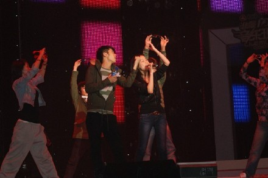
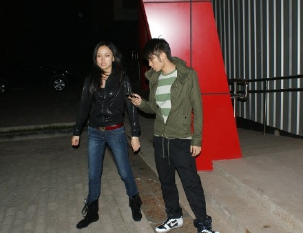
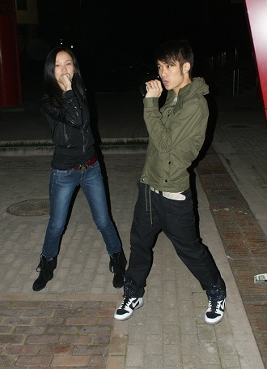

一个假期，就像是夏天和秋天的分界线。穿了外套，登上飞机睡过去。云层很厚，飞机一直颠簸乱窜。出了机场大厅，还是忍不住全身哆嗦，赶紧买了杯热豆浆抱在手里。
这个夏天来了北京温都水城参加云南卫视的《音乐现场》很多次，每一次都很开心的觉得意犹未尽。这一次来唱的是《红眼睛》，因为身体不太舒服加上北京又开始降温，彩排的时候又需要记舞步，嗓子也没有唱开，感觉唱出来的不是自己的声音。所以抓紧时间在门外拉舞蹈老师排练，希望可以多熟练动作，这样唱起来更加得心应手。
这次和我同台的有郭顶，在初秋的北京听到这么温暖的声音是很舒服的。还有杨培安老师，我要和他同台飙高音，我觉得我飙不过，他连我最爱的Mariah
Carey都可以原Key唱上去了。
明天北京又要降温了，听说会下小雨。我带了漂亮的华丽的复古的蓬蓬裙，准备穿着它唱红眼睛给你们听。